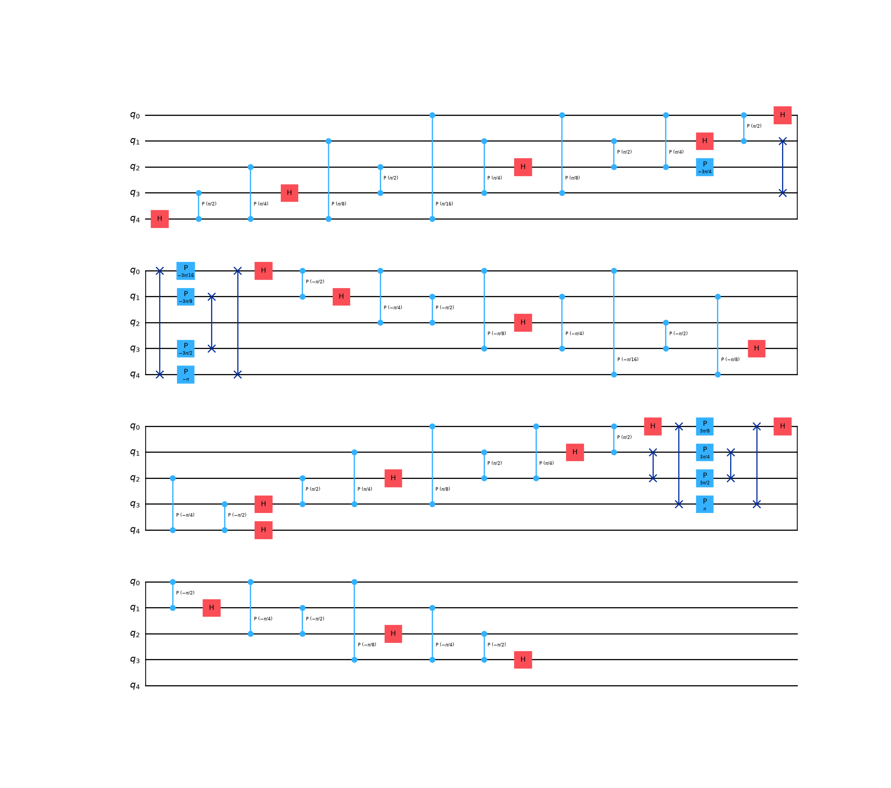
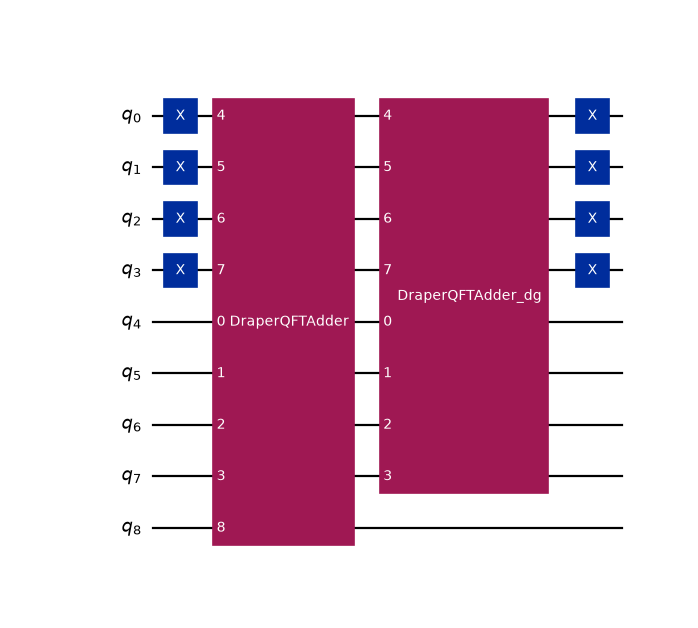
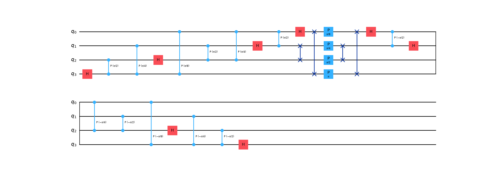
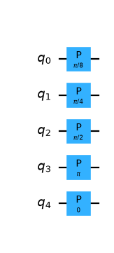
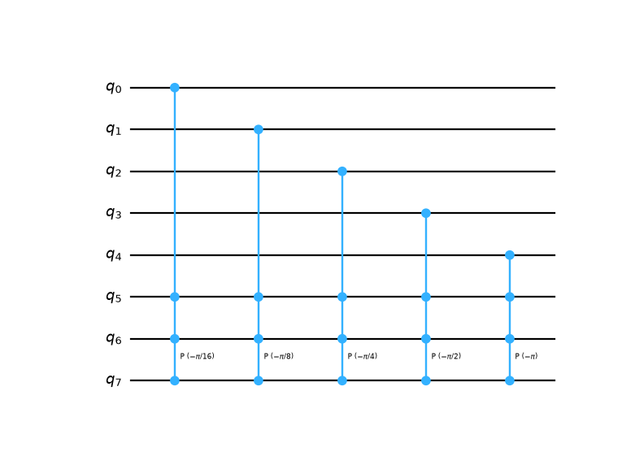
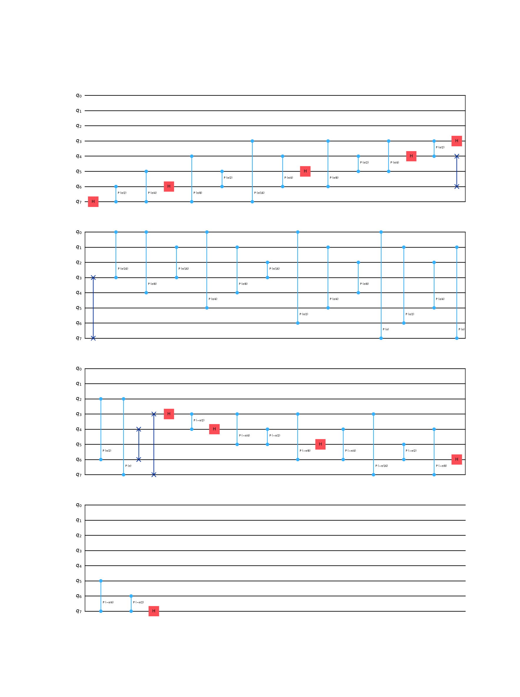
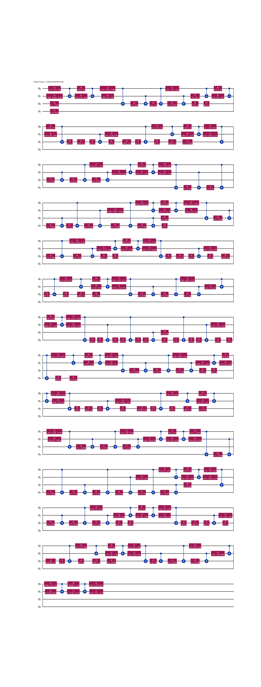
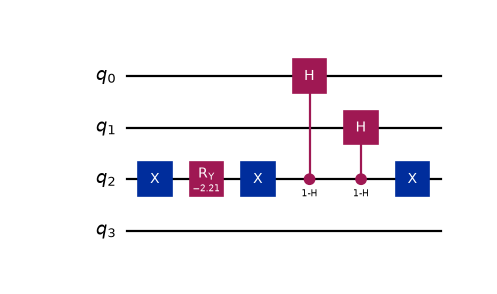
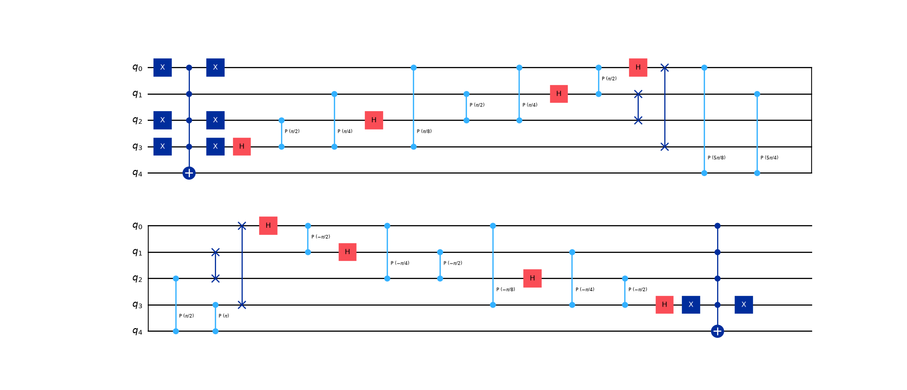
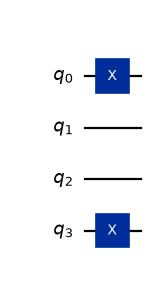

Common and Misc Circuits#
Circuits that are used throughout different algorithms, have niche use cases, or are not encoding-specific.
This page documents components that are shared throughout different encodings and different stages of algorithms.
Comparators#
- class qlbm.components.common.SingleRegisterComparator(num_qubits, num_to_compare, mode, logger=<Logger qlbm (WARNING)>)[source]#
Quantum comparator primitive that compares a quantum state of
num_qubitsqubits and an integernum_to_comparewith respect to aComparatorMode.Attribute
Summary
num_qubitsNumber of qubits encoding the integer to compare.
num_to_compareThe integer to compare against.
modeThe
ComparatorModeused to compare the two numbers.loggerThe performance logger, by default getLogger(“qlbm”)
Example usage:
from qlbm.components.common.comparators import SingleRegisterComparator from qlbm.tools.utils import ComparatorMode # On a 5 qubit register, compare the number 3 SingleRegisterComparator(num_qubits=5, num_to_compare=3, mode=ComparatorMode.LT).draw("mpl")
(
Source code,png,hires.png,pdf)
- Parameters:
num_qubits (int)
num_to_compare (int)
mode (ComparatorMode)
logger (Logger)
{kind=link}
{kind=link}
- class qlbm.components.common.TwoRegisterComparator(num_qubits, mode, logger=<Logger qlbm (WARNING)>)[source]#
Quantum comparator primitive that compares the states of 2 registers of
num_qubitsqubits aComparatorMode.The generate circuit is of size
2*num_qubits+1, where the last qubit of the register holds the boolean result.Example usage:
from qlbm.components.common.comparators import TwoRegisterComparator from qlbm.tools import ComparatorMode # Compare two registers of size 4 TwoRegisterComparator(num_qubits=4, mode=ComparatorMode.LT).draw("mpl")
(
Source code,png,hires.png,pdf)
- Parameters:
num_qubits (int)
mode (ComparatorMode)
logger (Logger)
{kind=link}
{kind=link}
- class qlbm.tools.ComparatorMode(value, names=<not given>, *values, module=None, qualname=None, type=None, start=1, boundary=None)[source]#
Enumerator for the modes of quantum comparator circuits.
The modes are as follows:
(1,
ComparatorMode.LT, \(<\));(2,
ComparatorMode.LE, \(\leq\));(3,
ComparatorMode.GT, \(>\));(4,
ComparatorMode.GE, \(\geq\)).
Arithmetic#
- class qlbm.components.common.ParameterizedDraperAdder(num_qubits, num_to_add, positive, num_ctrl_qubits=0, logger=<Logger qlbm (WARNING)>)[source]#
A QFT-based incrementer used to perform streaming in the algorithms based on amplitude encodings.
Incrementation and decerementation are performed as rotations on grid qubits that have been previously mapped to the Fourier basis. This happens by nesting a
ParameterizedPhaseShiftprimitive between regular and inverse \(QFT\)s.Attribute
Summary
num_qubitsNumber of qubits of the circuit.
num_to_add.The number to add.
positiveWhether to increment in in the positive (T) or negative (F) direction.
num_ctrl_qubitsThe number of qubits to control the PhaseShift.
loggerThe performance logger, by default getLogger(“qlbm”)
Example usage:
from qlbm.components.common.adders import ParameterizedDraperAdder ParameterizedDraperAdder(4, 1, True).draw("mpl")
(
Source code,png,hires.png,pdf)
- Parameters:
num_qubits (int)
num_to_add (int)
positive (bool)
num_ctrl_qubits (int)
logger (Logger)
{kind=link}
{kind=link}
- class qlbm.components.common.ParameterizedPhaseShift(num_qubits, num_to_add, positive=False, num_ctrl_qubits=0, logger=<Logger qlbm (WARNING)>)[source]#
A primitive that applies the phase-shift as part of the
ParameterizedDraperAdderused inComparators.The rotation applied is \(\pm \frac{\pi}{2^{n_q - 1 - j}}\), with \(j\) the position of the qubit (indexed starting with 0). Unlike the regular
PhaseShift, the parameterized version additionally adds a phase relative to the number supplied. For an in-depth mathematical explanation of the procedure, consult Sections 4 and 5.5 of Schalkers and Möller [10].Attribute
Summary
num_qubitsThe number of qubits to perform the phase shift for.
positiveWhether the phase shift is applied to increment (T) or decrement (F) the position of the particles. Defaults to
False.num_to_addThe specific number to add as part of the Draper Adder.
loggerThe performance logger, by default
getLogger("qlbm").num_ctrl_qubitsThe number of qubits to control the PhaseShift.
Example usage:
from qlbm.components.common.adders import ParameterizedPhaseShift # A phase shift of 5 qubits, adding the number 2 ParameterizedPhaseShift(num_qubits=5, num_to_add=2, positive=True).draw("mpl")
(
Source code,png,hires.png,pdf)
Including control qubits:
from qlbm.components.common.adders import ParameterizedPhaseShift # A phase shift of 5 qubits, controlled subtracting the number 1 ParameterizedPhaseShift(num_qubits=5, num_to_add=1, positive=False, num_ctrl_qubits=3).draw("mpl")
(
Source code,png,hires.png,pdf)
- Parameters:
num_qubits (int)
num_to_add (int)
positive (bool)
num_ctrl_qubits (int)
logger (Logger)
{kind=link}
{kind=link}
{kind=link}
{kind=link}
Miscellaneous#
- class qlbm.components.common.EmptyPrimitive(lattice, logger=<Logger qlbm (WARNING)>)[source]#
Empty primitive used for effectively not specifying parts of the QLBM algorithm.
Useful in situations where testing the end-to-end implementation of the algorithm where one part of the algorithm is left out or not yet implemented.
Attribute
Summary
latticeThe
Latticebased on which the number of qubits is inferred.loggerThe performance logger, by default
getLogger("qlbm").- Parameters:
lattice (Lattice)
logger (Logger)
- class qlbm.components.common.MCSwap(lattice, control_qubits, target_qubits, logger=<Logger qlbm (WARNING)>)[source]#
Decomposition of a Multi-Controlled Swap Gate into 1 multi-controlled \(X\) gate and 2 single-controlled \(X\) gates.
Decomposition taken from Heese et al. [7].
Attribute
Summary
latticeThe
Latticebased on which the number of qubits is inferred.control_qubitsThe qubits that control the swap gate.
target_qubitsThe two qubits to be swapped.
loggerThe performance logger, by default
getLogger("qlbm").- Parameters:
lattice (Lattice)
control_qubits (List[int])
target_qubits (Tuple[int, int])
logger (Logger)
- class qlbm.components.common.HammingWeightAdder(x_register_size, y_register_size, logger=<Logger qlbm (WARNING)>)[source]#
QFT-based Hamming Weight adder.
This primitive adds the hamming weight (number of 1s) in a given register \(x\) to the binary-encoded value of a second register \(y\).
Example usage:
from qlbm.components.common import HammingWeightAdder # Add the Hamming weight of a 3-qubit register onto a 5-qubit register HammingWeightAdder(3, 5).draw("mpl")
(
Source code,png,hires.png,pdf)
- Parameters:
x_register_size (int)
y_register_size (int)
logger (Logger)
{kind=link}
{kind=link}
- class qlbm.components.common.TruncatedQFT(num_qubits, dft_size, logger=<Logger qlbm (WARNING)>)[source]#
Truncated Quantum Fourier Transform primitive used to create an equal magnitude superposition.
For a superposition of the first \(k\) basis states encoded in \(n\) qubits, the operator consists of discrete fourier transform block of size \(k\times k\), padded with \(2^n - k\) \(1\)s on the main diagonal. The rationale and properties of this operator are described in [6]. This primitive is used in both amplitude-based and computational basis state encodings. In the
ABInitialConditions, it creates an equal magnitude superposition over the velocity space. In theEQCRedistribution, the superposition is over all basis states with an equivalent mass and momenta.Example usage:
from qlbm.components.common import TruncatedQFT TruncatedQFT(4, 5).circuit.decompose(reps=2).draw("mpl")
(
Source code,png,hires.png,pdf)
- Parameters:
num_qubits (int)
dft_size (int)
logger (Logger)
{kind=link}
{kind=link}
- class qlbm.components.common.UniformStatePrep(num_qubits, num_states, num_ctrl_qubits=0, logger=<Logger qlbm (WARNING)>)[source]#
Efficient uniform state preparation primitive used to create an equal magnitude superposition over the first \(k\) basis states.
This is an implementation of Algorithm 1 described by Shukla and Vedula [13]. It is used to create an uniform magnitude superposition over arbitrary velocity states in
ABDiscreteUniformInitialConditions.Example usage:
from qlbm.components.common import UniformStatePrep UniformStatePrep(4, 5).draw("mpl")
(
Source code,png,hires.png,pdf)
- Parameters:
num_qubits (int)
num_states (int)
num_ctrl_qubits (int)
logger (Logger)
{kind=link}
{kind=link}
- class qlbm.components.common.AdditionConversion(num_qubits, state_from, state_to, num_ctrl_qubits=0, logger=<Logger qlbm (WARNING)>)[source]#
Converts one basis state to another by incrementation/decrementation.
Useful for performing permutations in which the initial superposition contains no basis states of the target superposition.
The circuit utilizes a
ParameterizedDraperAdderwhich controlled on the state of an ancilla qubit to add the difference only to the target basis state.from qlbm.components.common import AdditionConversion AdditionConversion(4, 2, 7).draw("mpl")
(
Source code,png,hires.png,pdf)
- Parameters:
num_qubits (int)
state_from (int)
state_to (int)
num_ctrl_qubits (int)
logger (Logger)
{kind=link}
{kind=link}
- class qlbm.components.common.StateSetter(num_qubits, state_to_set, logger=<Logger qlbm (WARNING)>)[source]#
Permutes the superposition such that a target state \(\ket{k}\) is permuted to \(\ket{1}^{\otimes n}\).
The primitive acts a single layer of \(\mathrm{X}\) gates on the qubit indices that have value \(\ket{0}\) for the input state.
from qlbm.components.common import StateSetter StateSetter(4, 6).draw("mpl")
(
Source code,png,hires.png,pdf)
- Parameters:
num_qubits (int)
state_to_set (int)
logger (Logger)
{kind=link}
{kind=link}